Mensajería
Enviar como un mensaje
Del WhatsApp se toma la captura rápida de foto y texto, el envío que espera a que regrese la señal y las marcas de enviado. El personal ya lo usa para reportar, así que la app se aprende más rápido.
UABC · FIAD · Arquitectura de la información
Esta página resume el documento de arquitectura de la información: qué necesidades resuelve, cómo se estructura el sistema en pantallas, rutas y tablas, cómo se mueve cada usuario por él y qué ve primero en cada pantalla. Se construyó con la encuesta al personal, la entrevista al experto y el formato en papel que se usa hoy.
Fase 0 · Cimientos
Las obvias son las que el personal dijo directamente. Las ocultas nadie las pidió, pero salen de cómo el experto describió su trabajo en la entrevista.
| # | Necesidad | Fuente |
|---|---|---|
| N1 | Llenar el parte en menos tiempo: hoy tarda desde 1–5 hasta más de 20 minutos. | Encuesta |
| N2 | Que el parte no se pierda ni se dañe: a 2 de 4 ya les pasó. | Encuesta |
| N3 | Usarlo como app en el celular o en una tablet. | Encuesta y comentario del personal |
| N4 | Que la descripción de los hechos cueste menos: los 4 la marcaron como lo más tedioso. | Encuesta |
| N5 | Letras grandes e íconos: buena parte del personal operativo son adultos mayores, por eso el texto ya subió de 14.5 a 24 px. | Encuesta e investigación |
| N6 | Entregar sin llevar el papel a la Dirección. | Entrevista |
| N7 | Cumplir el resguardo obligatorio de 10 años sin acumular papel en las estaciones. | Entrevista |
| N8 | Que el parte cite su fundamento normativo, para que tenga valor ante la fiscalía. | Entrevista |
| O1 | Que lo que ya mandan por WhatsApp cuente como el registro oficial, sin transcribirlo después. Oculta | Entrevista |
| O2 | Conservar un respaldo propio de la estación por si les restringen el acceso al sistema. Oculta | Entrevista |
| O3 | Ligar el parte con el número del C-5 y el NUC de fiscalía. Oculta | Entrevista |
| O4 | Que revise quien corresponde por división, no un solo jefe de turno. Oculta | Entrevista |
Mensajería
Del WhatsApp se toma la captura rápida de foto y texto, el envío que espera a que regrese la señal y las marcas de enviado. El personal ya lo usa para reportar, así que la app se aprende más rápido.
Paquetería
De los servicios de paquetería se toma el folio único y la línea de estados con comprobante. El parte cambia de manos (bombero, revisor, Dirección) igual que un paquete.
Ambulancias
Del registro electrónico de atención prehospitalaria se toma el formulario por secciones que calca el formato en papel y la firma del responsable al entregar.
Qué entra en esta versión: el "Reporte de salida de incidente" completo, desde que se abre hasta que la Dirección lo consulta; la revisión por el mando de cada división; la exportación en PDF como respaldo de la estación; el fundamento normativo que cita cada parte; y el archivo de largo plazo, donde cada parte validado se sella en PDF y se guarda los 10 años de resguardo.
Qué queda fuera: la bitácora, las notas, la revisión mecánica, el FRAP, la conexión directa con el C-5, las estadísticas y el trámite de destrucción ante sindicatura (el sistema sólo registra la autorización).
Fase 1 · Estructura
Frente a las pantallas del avance hay tres cambios:
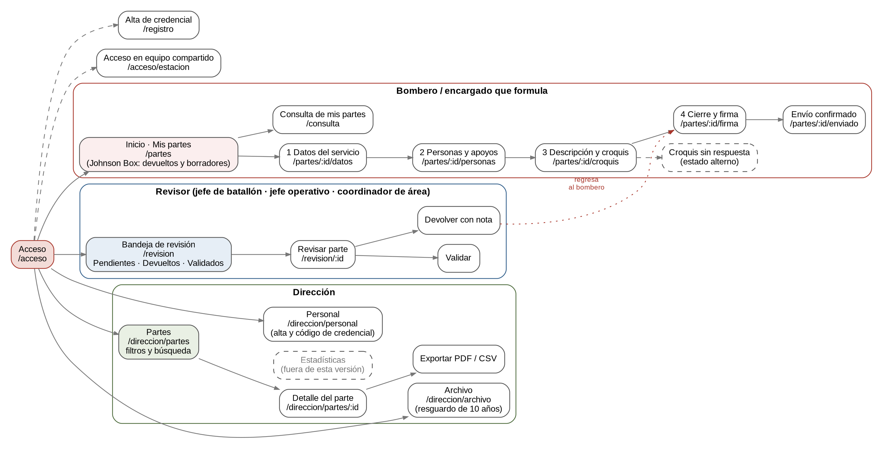
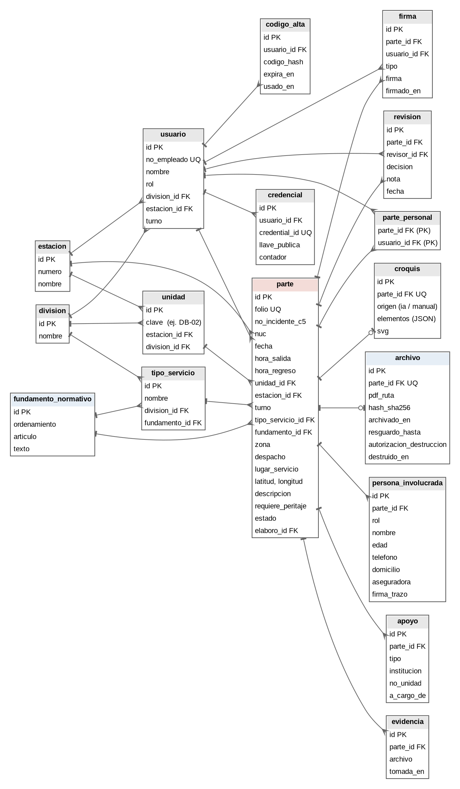
| Ruta | Pantalla | RF |
|---|---|---|
| /acceso | Acceso con huella o PIN | RF-01 |
| /partes | Inicio · Mis partes | RF-03, RF-09 |
| /partes/:id/datos | 1 Datos del servicio | RF-02, RF-03 |
| /partes/:id/personas | 2 Personas y apoyos | RF-02 |
| /partes/:id/croquis | 3 Descripción y croquis | RF-04 a RF-06 |
| /partes/:id/firma | 4 Cierre y firma | RF-07 |
| /revision | Bandeja del revisor | RF-08 |
| /revision/:id | Revisar parte | RF-09 |
| /direccion/partes | Consulta, filtros y exportación | RF-10 |
| /direccion/archivo | Archivo · resguardo de 10 años | RF-10 |
Cada filtro tiene su índice: estado y fecha para la bandeja, autor y estado para la pantalla de Inicio, número del C-5 y NUC para búsquedas exactas, fecha de vencimiento del resguardo para la pantalla de Archivo, y un índice de texto completo para el buscador. La lista completa de rutas, consultas e índices está en el documento.
Fase 2 · Task flows
La ruta feliz va en rojo, las entradas por otro lado (notificaciones, links, la computadora de la estación) en azul punteado y los comportamientos erráticos en naranja. Salen de los diagramas de actividad del avance.
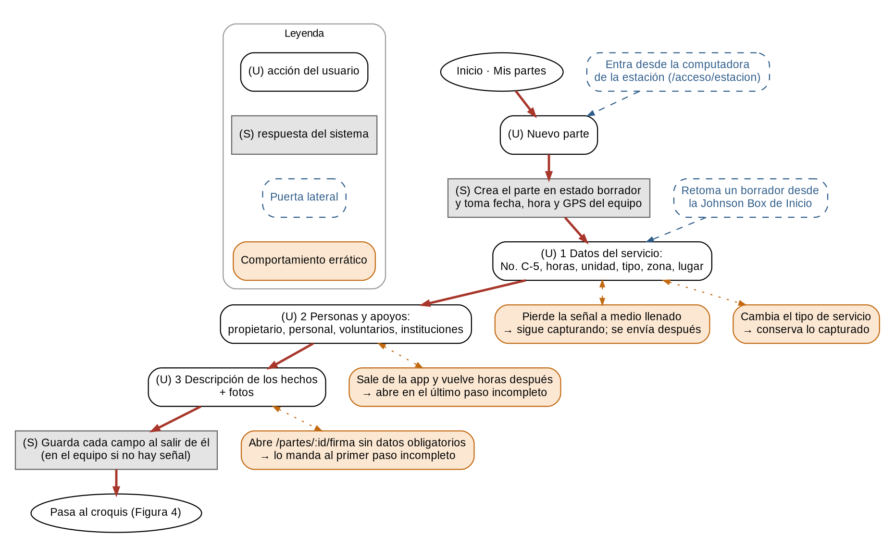
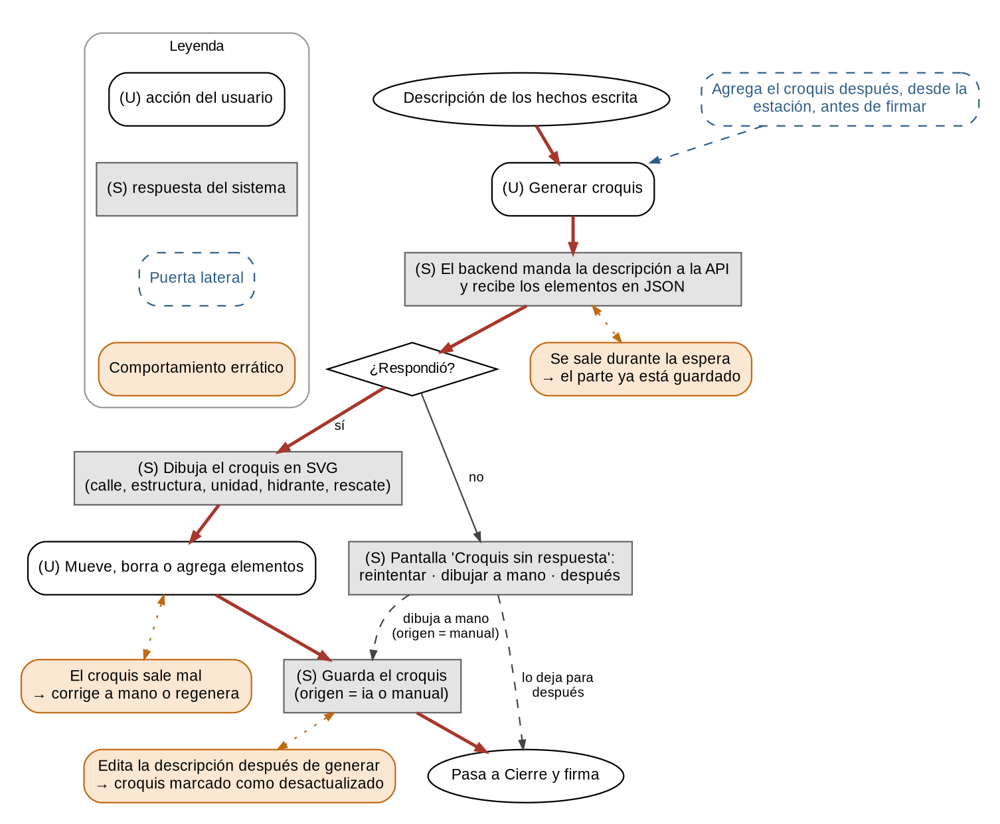
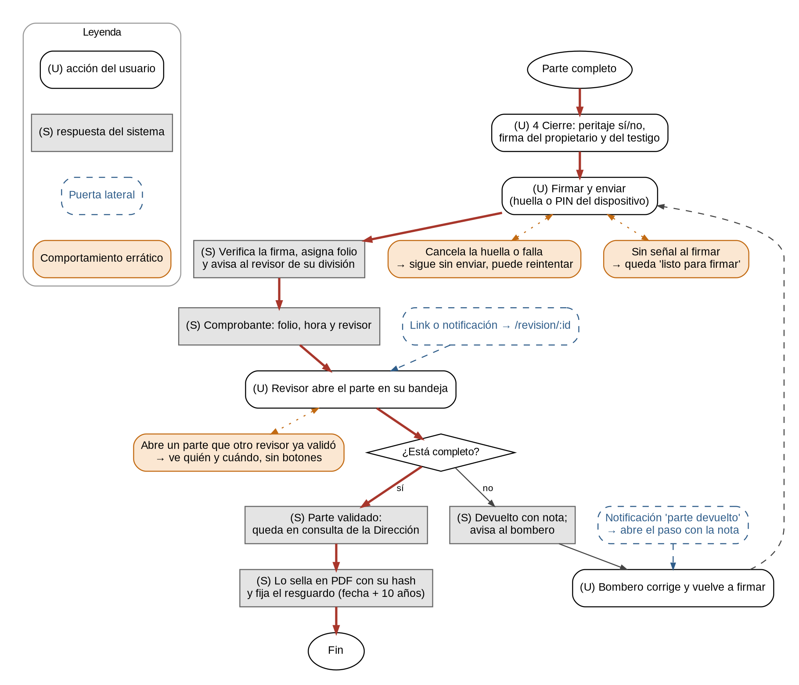
Fase 3 · Entrega
La Johnson Box es un resumen corto arriba de la pantalla de entrada que deja saltar directo a lo pendiente. La pirámide invertida pone primero el qué, cuándo, dónde y quién, luego los detalles y al final lo que es agradable de saber. Los folios y horas de los wireframes son datos de ejemplo.
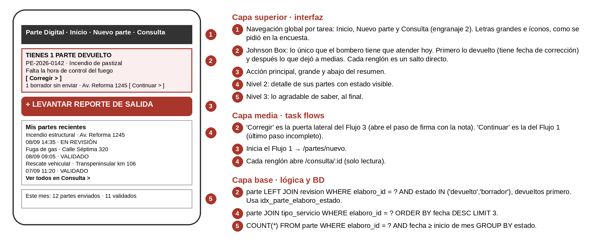
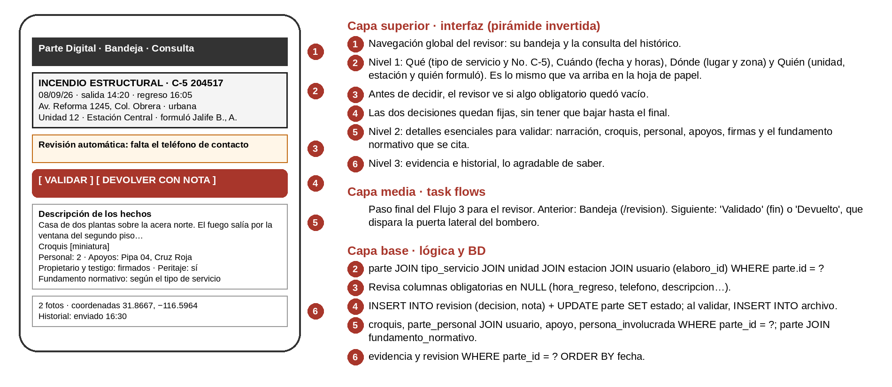
Fase 4 · Matriz diagnóstica
| Dimensión | Antes (lógica del sistema) | Ahora (lógica del usuario) |
|---|---|---|
| Prioridad | Campos que el equipo supuso; faltaban el número del C-5, la hora de regreso, la zona y el despacho. | El orden de la hoja de papel que ya conocen; en la revisión, lo crítico y los faltantes arriba. |
| Navegación | Menú por entidad y opciones sin pantalla. | Menú por tarea y rol; la Johnson Box lleva directo a lo pendiente. |
| Estructura de datos | Tres pasos y un solo jefe de turno que revisa todo. | Cuatro pasos que calcan el formato, revisión por división, fundamento normativo y archivo de 10 años. |
| Medida de éxito | Que el parte quede guardado y la consulta responda rápido. | Minutos para llenar el parte, partes que ya no pasan por WhatsApp, devueltos por datos faltantes y cero partes perdidos. |
Fase 5 · Síntesis
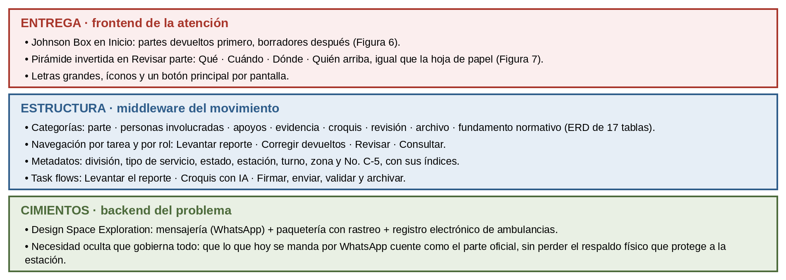
Implementación mínima
El prototipo vive en la carpeta app/ del repositorio, separado de esta maqueta. Es Node con Express, vistas EJS que se arman en el servidor y MySQL 8, sin JavaScript de cliente: cada acción es un enlace o un formulario, así que el sitemap de la Figura 1 se ve tal cual en las URLs. Se corre con npm install, npm run db:crear —que levanta la base con datos ficticios— y npm start, en localhost:3000.
Quedaron activas las 16 rutas de la tabla de rutas, con el menú que le toca a cada rol: bombero (Inicio, Nuevo parte, Consulta), revisor (Bandeja, Consulta) y Dirección (Partes, Archivo, Personal); /estadisticas contesta que quedó fuera de esta versión. Cinco pantallas son nuevas respecto a los mockups: Inicio · Mis partes, el paso 2 de personas y apoyos, el cierre del paso 4, Archivo y Personal. El esquema crea las 17 tablas del ERD con sus claves foráneas y los índices de la tabla de metadatos. El camino recorrido es el Flujo 3 combinado con el 1: levantar el parte, firmarlo, enviarlo, la revisión del mando —validar o devolver con nota— y el sellado en la Dirección, con hash SHA-256 y resguardo a diez años. npm run probar recorre ese mismo camino por HTTP y comprueba 29 cosas, incluidos los permisos por rol y por división.
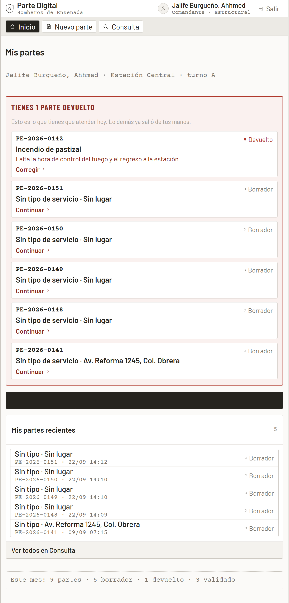
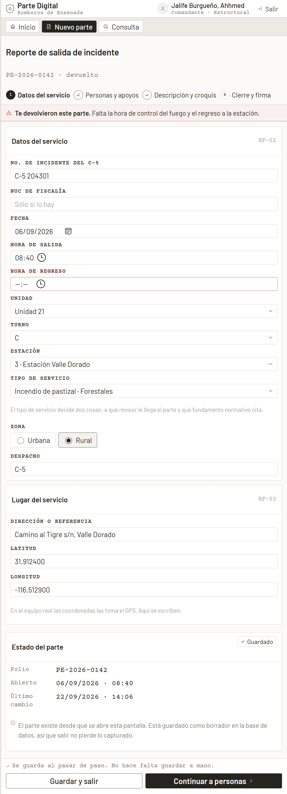
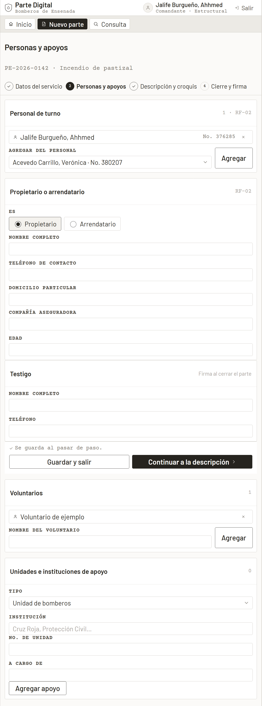
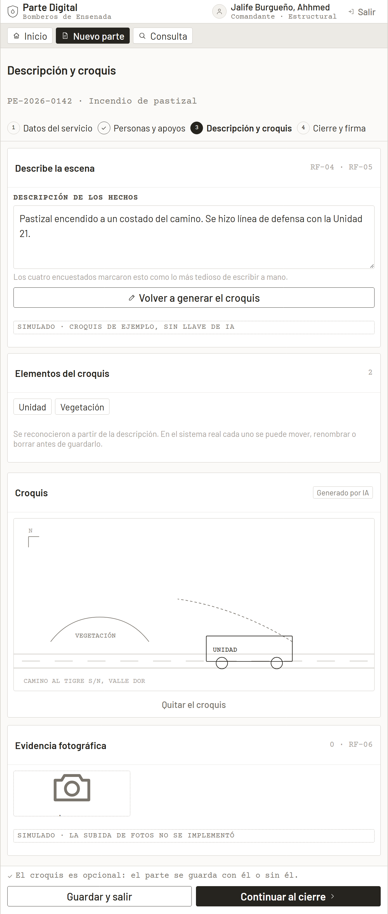
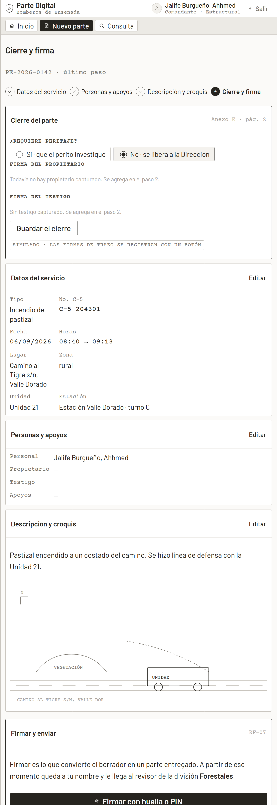
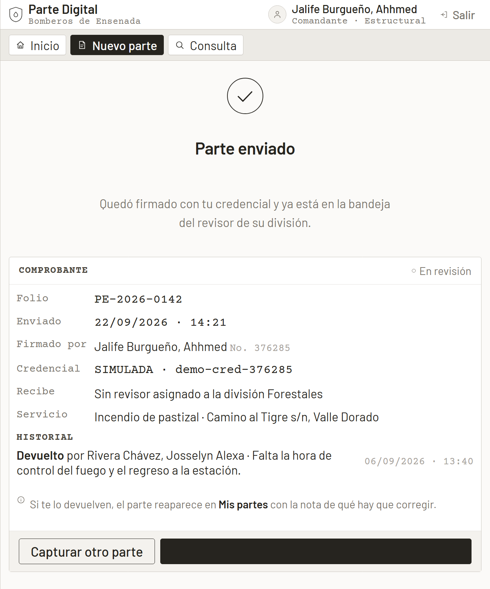
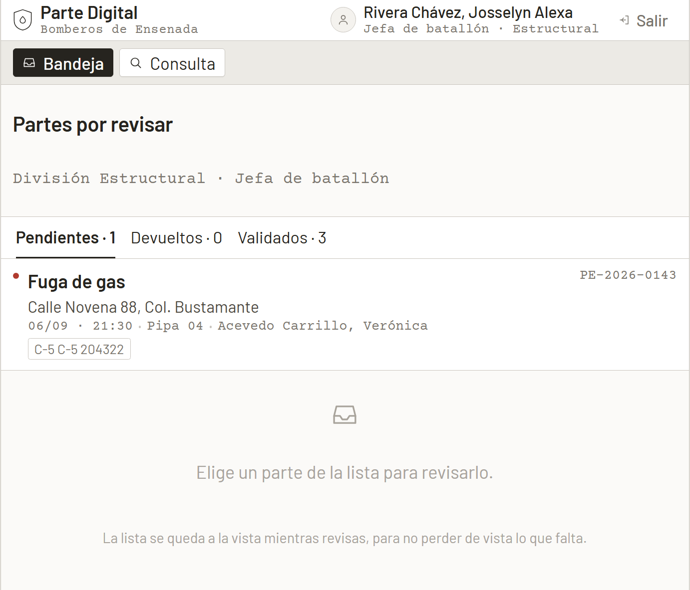
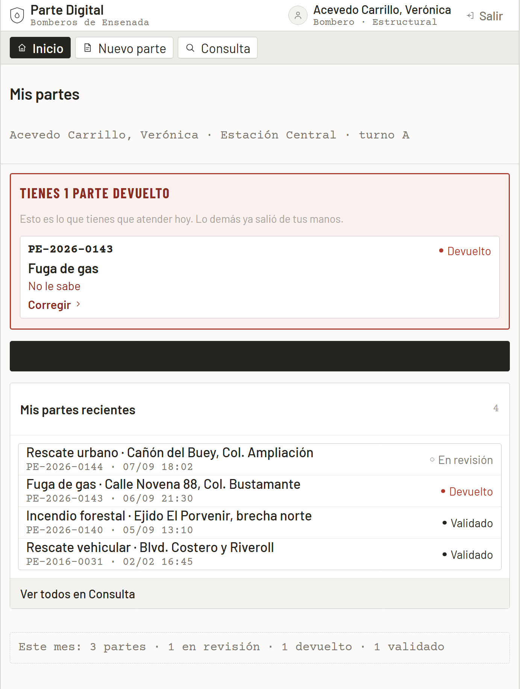
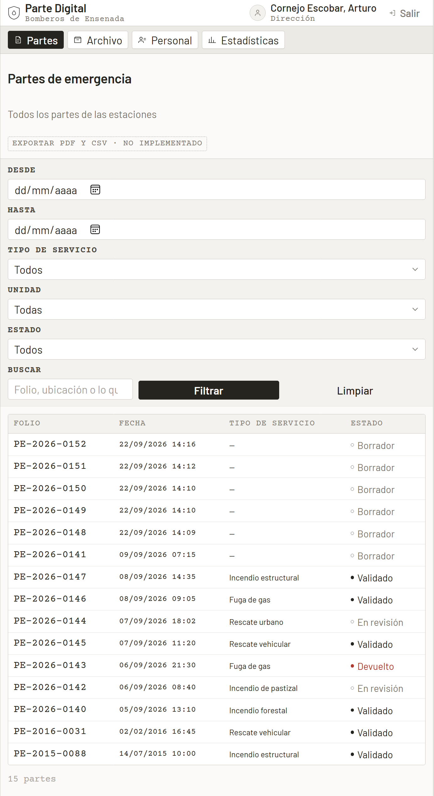
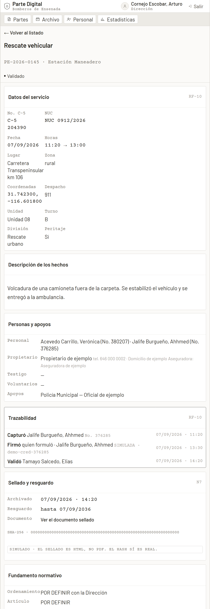
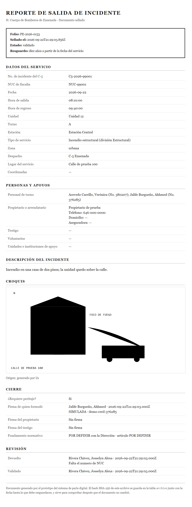
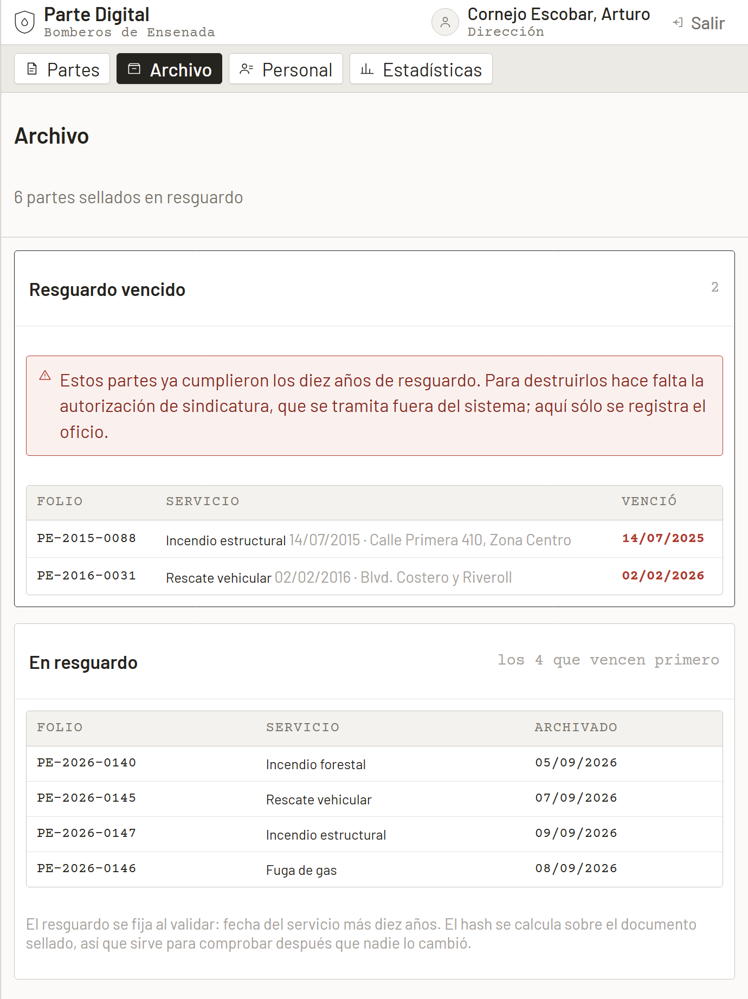
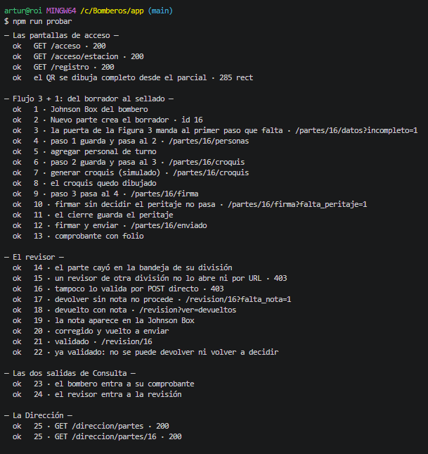
Siendo un prototipo, hay piezas que están puestas de mentiras. Vale la pena decir cuáles, y qué sí funciona de verdad debajo de cada una.
| Pieza | Qué está puesto de mentiras y qué funciona debajo |
|---|---|
| Sesión Simulado | Se entra con un selector de usuario en vez de WebAuthn. El parte sí queda ligado a quien lo elaboró, y los permisos salen del rol y de la división. |
| Firma Simulado | Un botón de firmar en lugar de la huella. El renglón sí se guarda en la tabla firma, y la tabla credencial guarda sólo la llave pública, como haría WebAuthn. |
| Croquis Simulado | Sin la llave de Gemini, el croquis se arma por palabras clave. Con la llave puesta sí llama a la API y le pide la salida en JSON. |
| Documento sellado Simulado | Se sella en HTML y no en PDF. El hash SHA-256 y el resguardo a diez años sí se calculan sobre ese archivo. |
| Modo sin conexión Fuera | El parte se guarda al pasar de un paso al siguiente, pero no hay borrador local ni envío diferido. |
| Fotos y exportación Fuera | Subir evidencia fotográfica y exportar a PDF o CSV no están implementados. |
{kind=link}
{kind=link}
{kind=link}
{kind=link}
{kind=link}
{kind=link}
{kind=link}
{kind=link}
{kind=link}
{kind=link}
{kind=link}
{kind=link}
{kind=link}
{kind=link}
{kind=link}
{kind=link}
{kind=link}
{kind=link}
{kind=link}
{kind=link}
{kind=link}